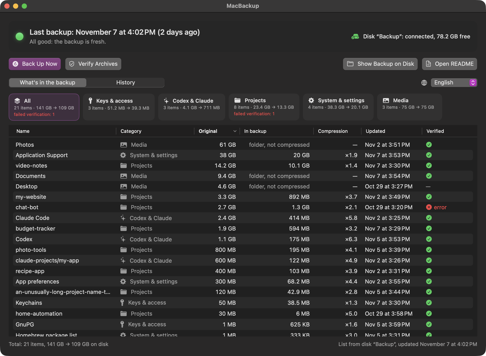
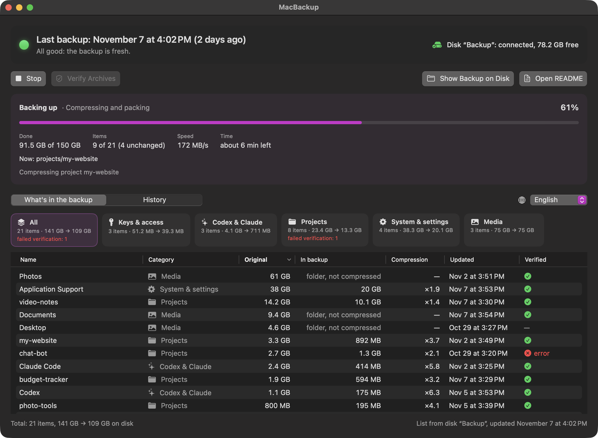
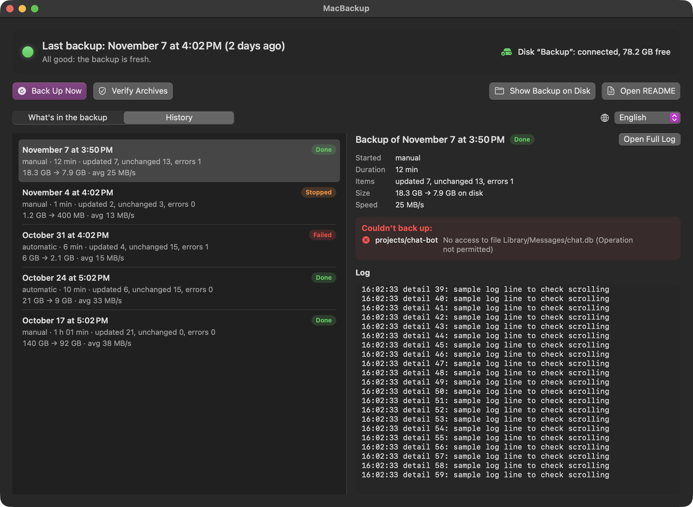
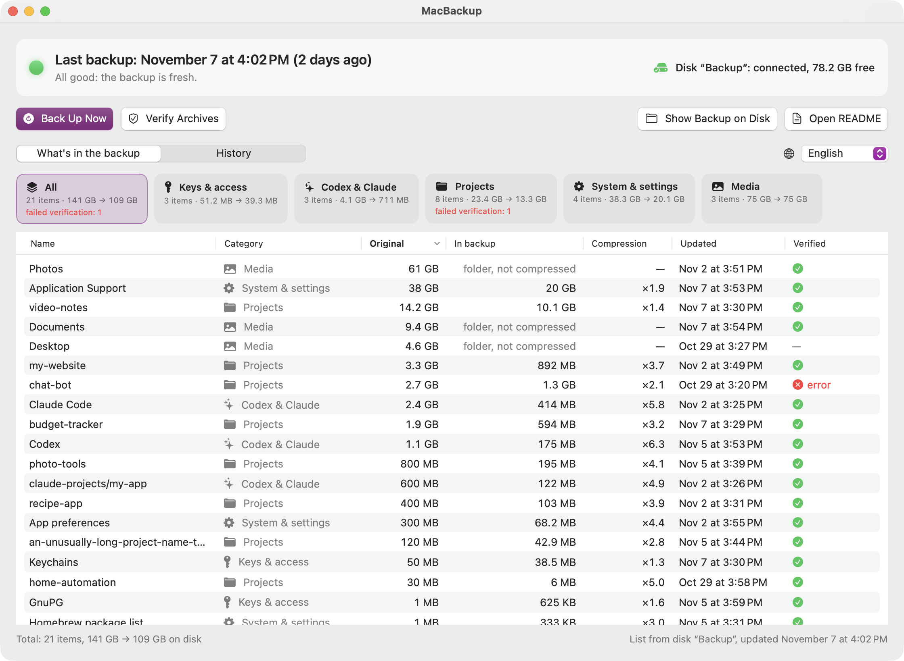
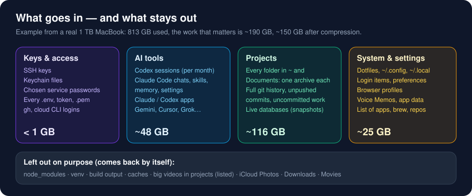
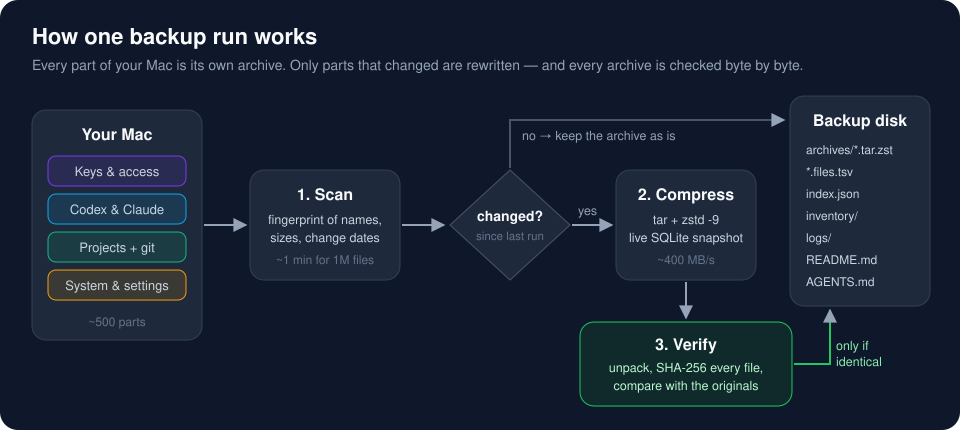

Claude Code, Codex & Cursor
Splits Codex sessions by month and Claude Code chats per project, keeping skills, memory, settings, and transcripts intact without re-packing gigabytes each week.
If your laptop dies today, what actually hurts to lose? SSH keys, .env secrets, months of Claude Code & Codex sessions, and unpushed Git work. MacBackup archives just what matters — compressed with zstd, SHA-256 verified byte by byte, and restorable on any Mac with built-in tar.
Free & open source · 1.4 MB native SwiftUI app · Zero network access · English & Russian
node_modules & cachestarzstd lives on the drive — restore anywhereAGENTS.md + index.json right on the disk



Every folder in your home directory and ~/Documents gets its own independent .tar.zst archive. AI coding tools are detected and split cleanly so incremental updates stay fast.

Splits Codex sessions by month and Claude Code chats per project, keeping skills, memory, settings, and transcripts intact without re-packing gigabytes each week.
After writing, every archive is decompressed, every file is SHA-256 checked against its manifest, and up to 25 files per part are compared directly against originals on your Mac.
Databases belonging to bots, apps, and Codex history are copied via SQLite's online backup API — never caught half-written mid-transaction.
SSH keys, .env files, .pem certs, tokens, and optional Keychain passwords are gathered into keys/secret-files on your encrypted drive.
Pull the SSD cable at any moment: MacBackup pauses calmly, cleans up the half-written archive next time you plug in, and resumes from the remaining parts.
The drive includes README.md, AGENTS.md, and index.json. On a new Mac, point Claude Code or Codex at the drive and ask it to restore your workspace.
They solve different problems and work best together. Time Machine is great for full-disk hourly snapshots; MacBackup is the compact, verified developer rescue kit you can restore on any borrowed Mac in minutes.
| Dimension | MacBackup | Time Machine |
|---|---|---|
| What it copies | Work that exists only on this Mac (keys, AI history, Git repos, dotfiles) | Whole disk, macOS system data, apps, caches |
| Size on drive | ~15–20% of disk (e.g. 150 GB of 813 GB) | 500 GB – 1 TB+ plus snapshot history |
| Shares an external SSD | Yes — one plain folder next to your other files | Wants a dedicated volume and space |
| Restore any single project | One tar command on any Mac (portable zstd included on drive) |
Migration Assistant / Time Machine browser |
| Proof the copy is intact | SHA-256 re-hashed every run | Trust |
| Understands developer work | Skips node_modules/caches, snapshots live SQLite DBs, reports unpushed Git commits |
Copies rebuildable junk; live DBs may be caught mid-write |
| Readable without the app | Plain .tar.zst + manifests + README.md / AGENTS.md |
Only through Time Machine |
First run takes about an hour; weekly incremental runs finish in minutes because unchanged folders are skipped via file-tree fingerprinting.

Requires macOS 14+ (Apple Silicon or Intel), Python 3 (built into macOS/Xcode CLT), and Homebrew zstd.
brew install zstdMacBackup.zip from Latest Release and move MacBackup.app to /Applications../scripts/install-scheduler.sh to back up automatically whenever the drive is plugged in and due.
Nothing to install on the replacement Mac. MacBackup stores a portable, zero-dependency universal zstd binary right inside tools/ on your backup disk.
cd /Volumes/<YourDisk>/MacBackup export PATH="$PWD/tools:$PATH" # 1. Restore SSH keys & secrets first for a in archives/keys/*.tar.zst; do tar -xf "$a" -C ~; done chmod 700 ~/.ssh && chmod 600 ~/.ssh/* # 2. Restore a single project — or everything find archives -name '*.tar.zst' -print0 \ | xargs -0 -n1 tar -C ~ -xf